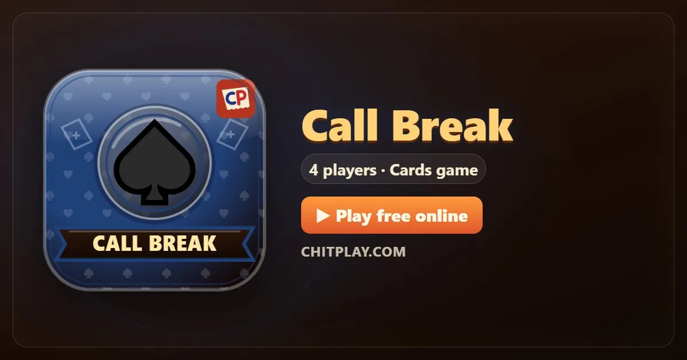

Call Break strategy: bidding and playing to win
Updated 2026-11-15

Call Break is won at the bid. Every hand you call how many tricks you will take; make your call and you score it, fall short and you lose it. Taking extra tricks barely helps. So the whole game is about reading your hand honestly, then playing to land exactly on (or just over) your call while making the others miss theirs.
Spades are always trumps, everyone must follow the suit that was led and beat the best card if they can, and a player with none of that suit must trump. These tips assume those standard rules, which are the ones ChitPlay uses.
▶ Play Call Break free Full Call Break rules
Count your sure tricks
Start with the cards that win on their own: the ace of spades always wins; an ace in another suit usually wins the first time that suit is led; a king with the ace already gone, or a king guarded by another card of its suit, often wins too. Count those first. That number is the base of your bid.
Add for spades, carefully
Spades win tricks in two ways: high spades win spade tricks, and any spade can win a trick in a suit you have run out of. Five or more spades usually earn one or two extra tricks this way. Three small spades earn far less than they seem to, because others will have higher ones.
Short suits are worth tricks
If you hold no clubs, the first time clubs are led you can trump. A void (no cards of a suit) or a singleton (one card) in a side suit, together with a few spades, is worth about a trick. Count it only if you have spades to use.
Bid low rather than high
Missing your call costs its full value; going over gains very little. When you are unsure between two numbers, choose the lower one. Most beginners lose games by bidding hopefully, not by playing badly.
Lead from strength, not from aces alone
Leading an ace wins a trick but tells everyone you no longer hold it. Leading a suit where you have a long run lets your later cards win as the others run out. Save your lone aces to win when someone else leads that suit.
Trump when it matters
When you can win with a small spade, do it on tricks that also hold high cards from others: you stop them reaching their call. Do not waste a high spade on a trick a low one would win.
Count the spades as they fall
There are thirteen spades. Keep a rough count of how many have been played and which high ones are gone. When only your spades are left, every one of them is a sure trick.
Once your call is made, defend
After you reach your bid, play to stop the others. Win tricks that someone needs, throw your lowest cards when you cannot win, and force the player with the highest call to use their trumps early.
Questions
How many tricks should I bid in Call Break?
Count aces, protected kings and the tricks your spades and short suits can win. Bid that number, and choose the lower number when in doubt.
What happens if I take more tricks than I bid?
In most scoring, each extra trick is worth only a tenth of a point. Missing your bid costs its full value, so making it matters far more than going over.
Do I have to trump if I cannot follow suit?
Yes. In ChitPlay’s rules, with no card of the suit led you must play a spade if you have one, and a higher spade than any already played if you can.
More strategy guides
Ludo strategy · Carrom strategy · Chess strategy · Chit game strategy